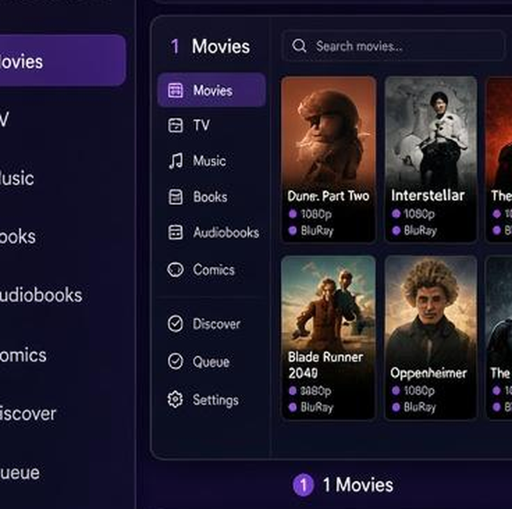
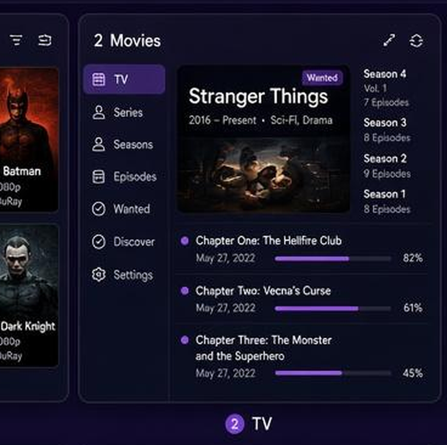
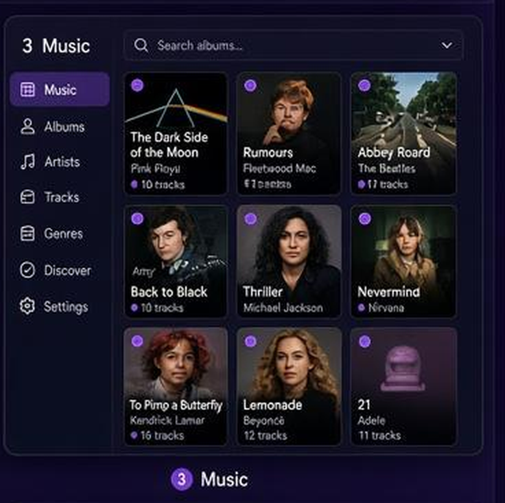
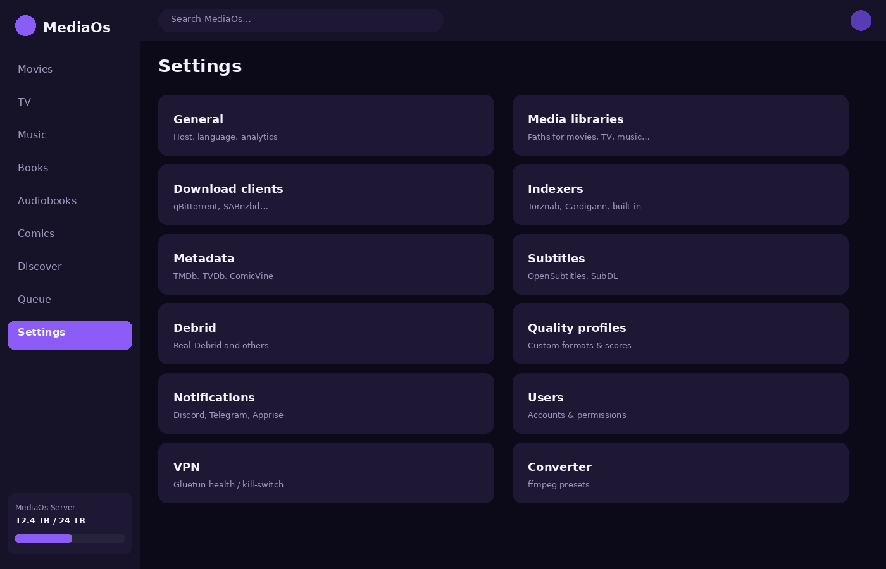
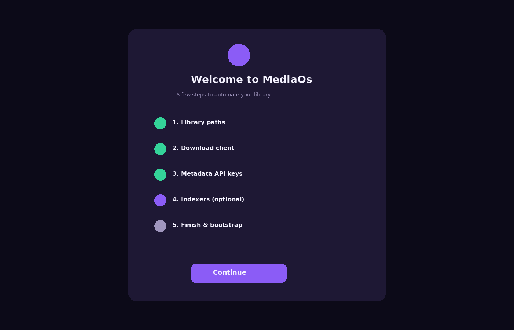
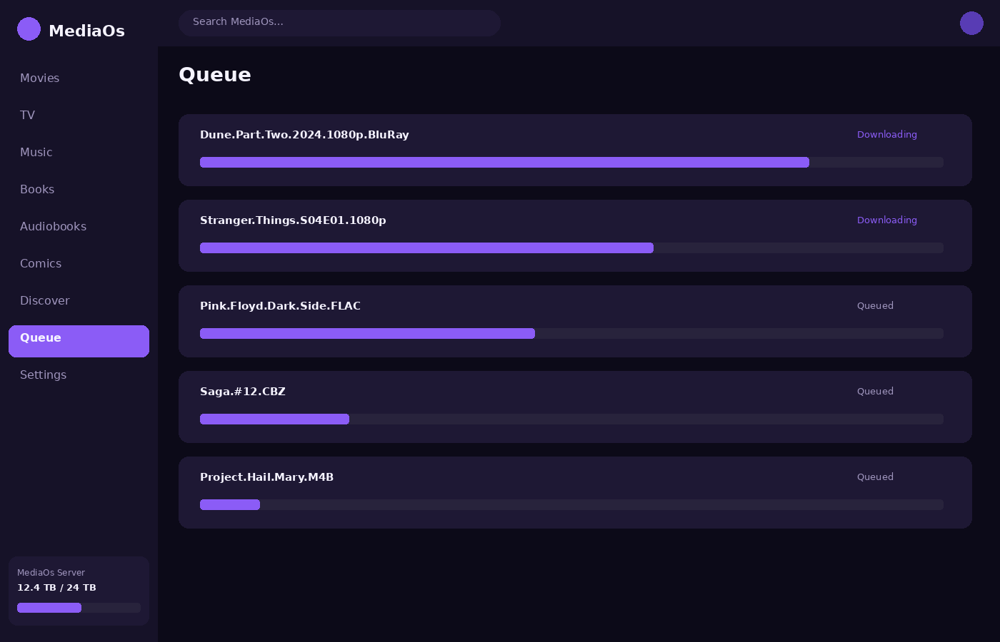

v4.13.3Self-hostedDocker
One app for your whole library
MediaOs replaces the classic *arr stack in a single container: Sonarr, Radarr, Lidarr, Readarr, Whisparr, NeutArr/Huntarr, Cleanuparr, Prowlarr, Recyclarr, Maintainerr — plus Live TV, comics, YouTube, and a converter.


v4.13.3 is current — critical patch, upgrade strongly recommended.
The prior release shipped with two Python syntax errors that broke the app on
boot (setup router) and broke Live TV entirely (import order in
services/livetv.py). This release fixes both, closes two auth
hardening gaps (constant-time API key check, login/adult-unlock rate
limiting), and adds the GHCR + UI CI workflows. See the full
changelog for details.
Why MediaOs
Shared pipeline
One search, grab, quality, and organize path for every media type.
Built-in Hunt
NeutArr/Huntarr-class aggressive missing + optional upgrades. No extra container.
Built-in Cleanup
Stalled strikes, seed goals, orphans — Cleanuparr/Swaparr-class, native.
Adult (Whisparr)
Passcode-gated adult library, XXX indexers, native organize + hunt.
Hardlink organize
Hardlink into the library when on the same filesystem; seed without doubling disk.
Live TRaSH Guides
Quality profiles and custom formats with live guide sync scaffolding.
Basic + Advanced
Friendly default UI; unlock indexers, quality matrix, Live TV, converter when you need them.
Arr-compat API
/api/v3 surface for clients that expect Radarr/Sonarr-style endpoints.
Modules
| Module | Replaces | Notes |
|---|---|---|
| Movies | Radarr | Core — always on |
| TV | Sonarr | Core — always on |
| Music | Lidarr | Artist → album hierarchy |
| Books / Audiobooks | Readarr | Optional modules |
| Adult | Whisparr | Passcode gate · XXX cat 6000 |
| Comics / Manga | Mylar-style | Pull list + story arcs |
| Hunt | NeutArr / Huntarr | Settings → Hunt |
| Cleanup | Cleanuparr / Swaparr | Settings → Cleanup |
| Indexers | Prowlarr / Jackett | Torznab + Cardigann + builtins |
| Live TV / YouTube / Converter | — | Optional advanced modules |
Quick start
git clone https://github.com/newguy467/MediaOs.git
cd MediaOs
cp .env.example .env
# edit paths / API keys
docker compose -f docker-compose.standalone.yml up -d --build
# UI → http://localhost:8787Health check: GET /api/health (reports version 4.13.3).
Screenshots






More docs
Container image
docker pull ghcr.io/newguy467/mediaos:latest
docker pull ghcr.io/newguy467/mediaos:4.13.3Images are multi-arch (linux/amd64, linux/arm64), built and pushed by
.github/workflows/ghcr.yml on every push to main and on every
v* tag. A separate ui.yml workflow builds and verifies the Vite/React UI
on any change under ui/**, independent of the full Docker build, for faster PR feedback.
Security model
MediaOs ships in open mode by default for easy local/LAN first-run — no
username, API key, or DB user configured means no auth is enforced. Set one of
AUTH_USERNAME/AUTH_PASSWORD, AUTH_API_KEY, or create a DB user
before exposing the container beyond your local network.
| Layer | Mechanism | Notes |
|---|---|---|
| Passwords | PBKDF2-HMAC-SHA256, 120k iterations, per-user salt | app/auth.py |
| Tokens / API keys | Constant-time comparison (hmac.compare_digest / secrets.compare_digest) | Covers bearer tokens, X-API-Key, and the *arr-compat X-Api-Key |
| Login throttling | Escalating backoff per client IP + username | /api/auth/login |
| Adult module | Separate passcode gate + short-lived unlock token, rate-limited | /api/adult/unlock |
| Library file access | Every resolved path is checked against configured library roots (symlinks included) | app/services/media_player.py::_assert_under_library |
| Permissions | Per-user permission list, admin role bypasses with * | require_permission() dependency on nearly every router |
Found a security issue? Please open a private security advisory on GitHub rather than a public issue.